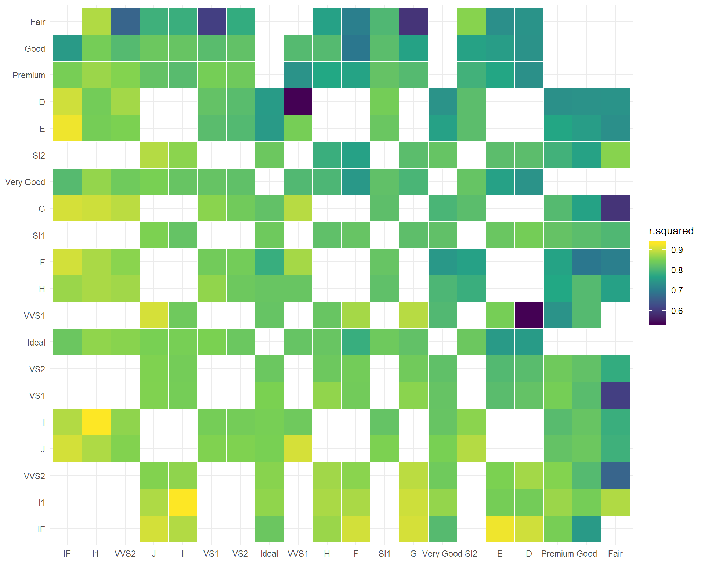

autumn is designed to streamline the many-models approach for exploratory data analysis and hypothesis testing.
auto_mm() is a function to apply a model to many different subsets of data.
model_maker() is a function factory to create a model function that can be applied with purrr.
extract_model_metric() is a function for getting model metrics using the broom package.
library(tidyverse)
library(autumn)
df = diamonds %>%
auto_mm(model = model_maker(lm, price ~ x + y + z), # defines model to test
split = c("cut", "color", "clarity"), # defines what to cut the data by
permutations = 2) %>% # defined how many permutations of cuts to make
extract_model_metric("p.value") %>%
extract_model_metric("r.squared")